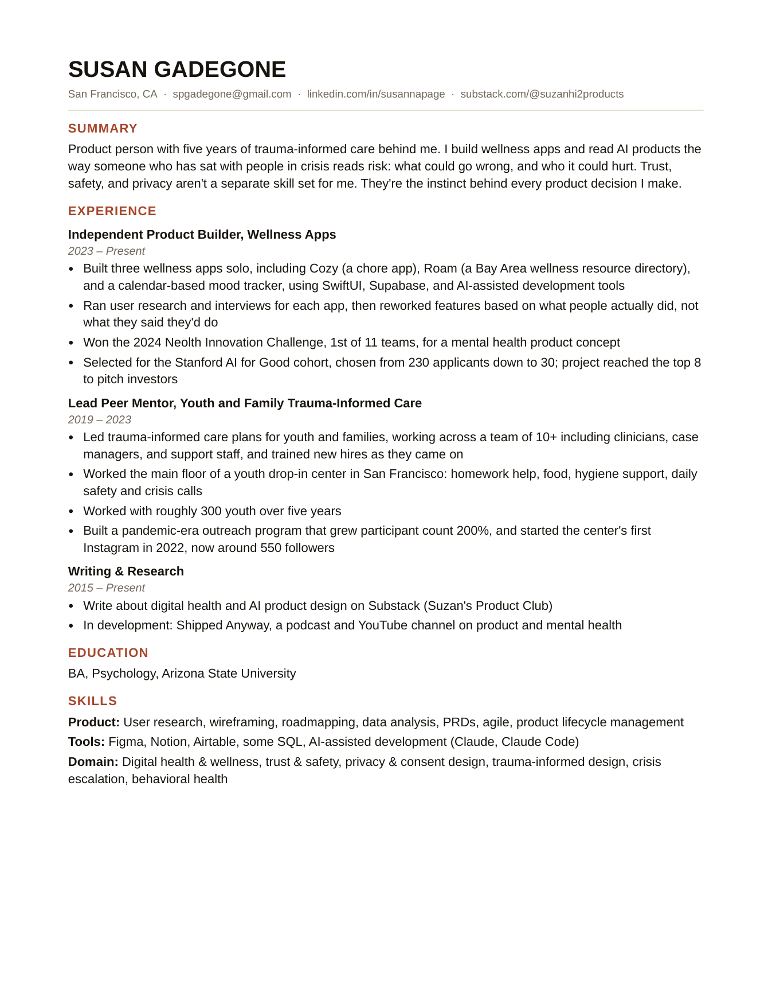

I build environments where people can find their own calm.
That's the through-line — not mental health work itself. Five years running crisis support for youth and families is where I learned it. It's not the whole story anymore.
Give people control. Don't take it from them.
Whether it's a product or a daily practice, I care about the same thing: does someone have control over the big and small moments of their day, or is the system making that call for them. I built three wellness apps to test whether that instinct holds up outside a crisis room.
I'm most useful to a team building something that hands people back a sense of control over their own day.
How peer mentor work becomes product instinct.
What this looks like in practice:
Where I learned it.
Builder & credentials
Built three wellness apps independently. 2024 Neolth Innovation Challenge winner (1st of 11). Stanford AI for Good: top 8 of 30. Writes on Substack. BA in Psychology, ASU.
Lead Peer Mentor, trauma-informed care
Ran the floor of an SF youth drop-in center: food, hygiene, homework help, daily safety calls — roughly 300 youth over five years, 10+ person team. Grew outreach 200%.
When in-person services shut down, I moved the center to a fully virtual format — working out which parts of walking through the door actually mattered and rebuilding those in tools that weren't built for it, until I knew the platforms well enough to make real decisions instead of guessing. People kept showing up.
I build to understand products from the inside.
Wellness apps, built from scratch. All on GitHub.
More builds and experiments live on GitHub.


What I want next is simple.
I want a product role where the work is giving people back control — wellness, mental health, trust and safety, wherever a system currently decides for someone instead of the person deciding for themselves. I read products the way I once judged safety cases: where it could go wrong, and who pays for it.
California, with the Bay Area preferred.
I'd love to hear from you.
